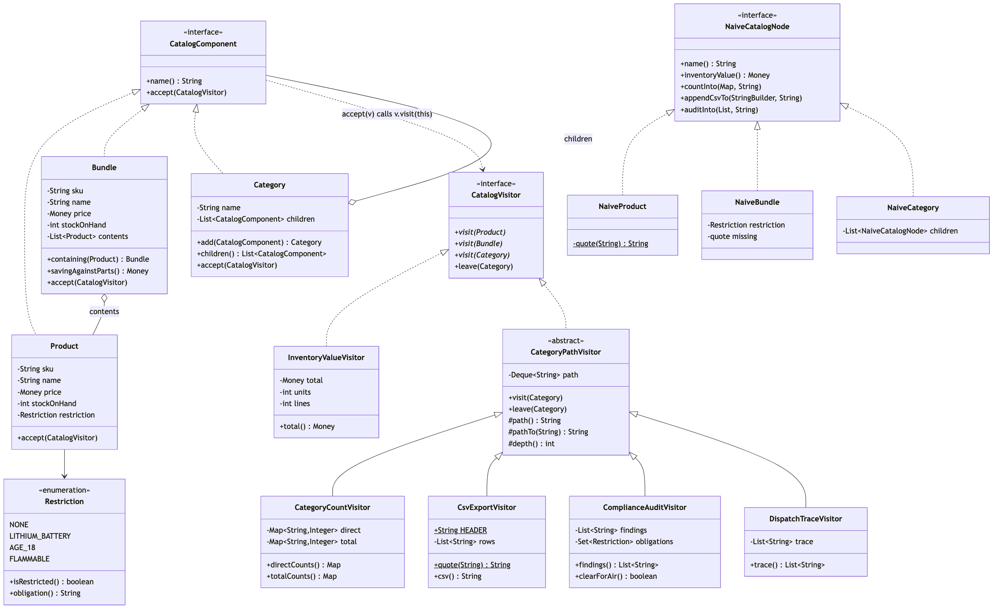

Class Diagram

The Two Hierarchies
The shape to take away is that there are two of them, side by side, and one dotted line between.
The left hierarchy is the catalog: three node types under CatalogComponent, and it is finished. The right hierarchy is the reports: six classes under CatalogVisitor, and it grows every month.
CatalogComponent ..> CatalogVisitor is the dotted line, and it points the direction that surprises people. The structure depends on the visitor interface — a Product names CatalogVisitor in its signature — while no node knows any concrete report exists. That is what lets LowStockVisitor be declared inside the demo file and LongestNameVisitor inside a test file.
Count The Boxes On Each Side
| Node types | Visitors | |
|---|---|---|
| Today | 3 | 6 |
| Adding one costs | a method on CatalogVisitor, and an edit to all 6 | one new file, and no edit anywhere |
That table is the entire argument for and against this pattern, and it is worth reading in both directions. The design is cheap along the axis that has six boxes and expensive along the axis that has three. If your diagram had those numbers the other way round — many node types, two operations — the naive design on the right of the picture is the one to choose, and the demo's section 5 prints the names of the six classes to make the cost concrete rather than theoretical.
What Each Visitor Overrides
| Visitor | visit(Product) | visit(Bundle) | visit(Category) | leave |
|---|---|---|---|---|
InventoryValueVisitor | price × stock | kit price × stock | nothing | — |
CategoryCountVisitor | count against the path | count against the path | register the path | pop |
CsvExportVisitor | a row, quoted | a row, quoted, no contents | push the path | pop |
ComplianceAuditVisitor | its own restriction | every restriction in the box | push the path | pop |
DispatchTraceVisitor | record | record | record | record |
The two bold cells are the reason Bundle is a separate node type rather than a flag on Product. A kit is not worth the sum of its parts, and it is restricted by things it does not itself declare. Both of those are sentences that need somewhere to be written, and visit(Bundle) is that place. In the naive design they are branches inside methods that were copied — and problem-statement.md shows what the copies did.
CategoryPathVisitor Is Not Part Of The Pattern
Four of the six visitors need to know where in the tree they are, and the bookkeeping is identical every time: push on the way in, pop on the way out. So there is a base class, and no node knows it exists.
That is worth saying because the diagram makes it look structural. It is not. A visitor hierarchy is ordinary code and is free to grow a base class the moment two visitors repeat themselves — InventoryValueVisitor sits outside it because a pound is a pound wherever it is shelved.